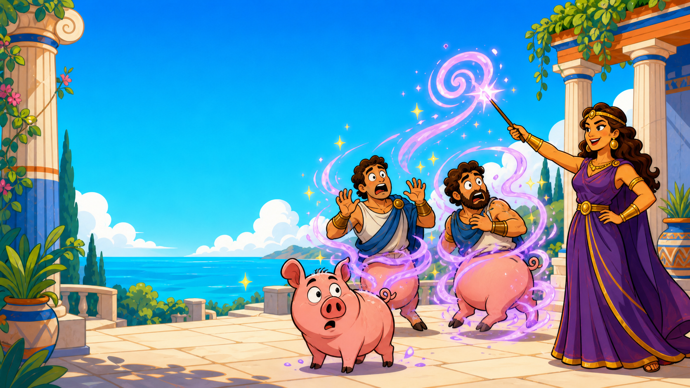
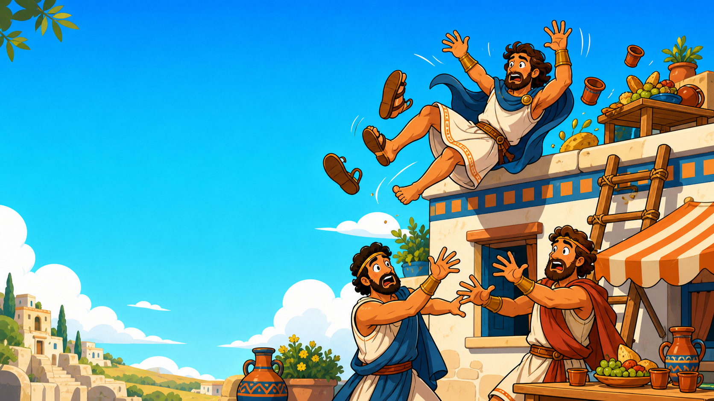
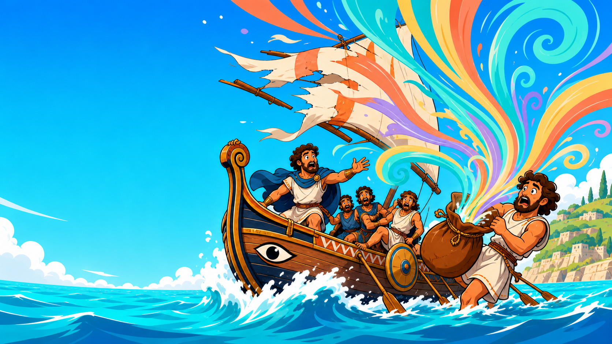
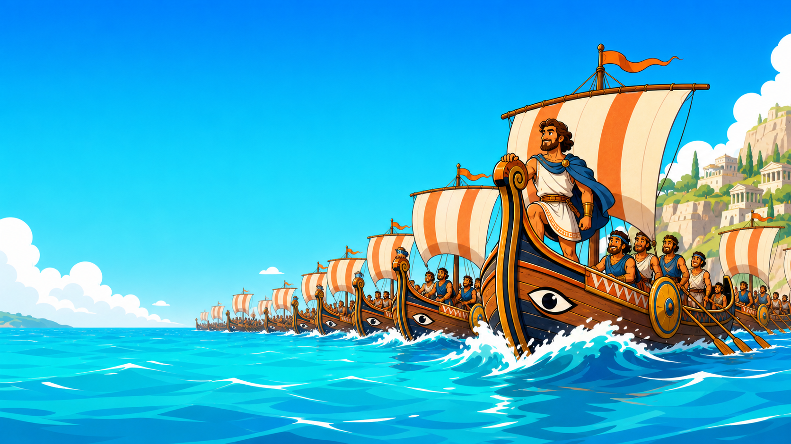

01
Documented route
What official docs ask someone to do.
DEVRELCON NYC · JULY 22, 2026
Removing friction in the first mile
Ojus Save
565 nautical miles.
About two weeks under sail.


Some of his men were eaten.
Some were turned into pigs.
One fell off a roof.

At one point, Ithaca was in sight.
Then someone opened the wrong bag.

He left with 12 ships and around 600 men.
He came home alone and unrecognized.
Developers don't arrive to complete your onboarding.
8 MINUTES · Completion is not required.
Do not enter personal, company, customer, card, or secret information.
No device? Watch the room route on screen.
TIME
Keep the last screen open.
The projector shows position and timing. It does not tell us why.
THREE KINDS OF EVIDENCE
01
What official docs ask someone to do.
02
Where this room reached, retried, and recorded bounded errors.
03
Why someone stopped, what they intended, and whether this happens elsewhere.
TRACKER SCOPE
FOUR EXAMPLES FROM 205 ROUTES
Business email and sandbox account
SMS verification and payment method
Token scopes and resource selection
Capability choice and production credential warning
RESEARCH METHOD
01
Official documentation for one platform.
02
One selected path for one developer intent.
03
A named milestone or demonstrated terminal state.
ROUTE CHOICE · 205 DOCUMENTED ROUTES
Recommend one next route for a specific developer intent.
SUCCESS SIGNALS · 205 DOCUMENTED ROUTES
ONE STOPPING POINT, THREE QUESTIONS
01
Could they choose the right permissions?
02
Did the card requirement stop them?
03
Did an error block recovery?
Ask before assigning the cause.
3 TO 4 MINUTES
Use the Atlas to choose what to investigate next.
FIRSTMILE
firstmile({ manifest, writeKey, routes })
fm.error("company_email", "freemail", attempt)
fm.shipped()Public Apache-2.0 source · not on npm · Node 20+ · ESM-only · review identifiers and credential handling before use.
A SMALL ENGINEERING ASK
IF ENGINEERING CANNOT INSTRUMENT IT YET
Fake data only. Do not invent steps. Do not publish or deploy without approval.
A prototype is not production telemetry or usability research.
FakeSaaSPI is source available for inspection. No public reuse rights are granted.
ON MONDAY